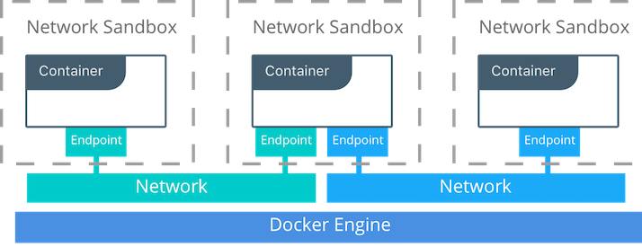
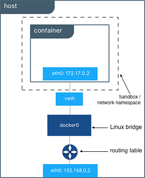
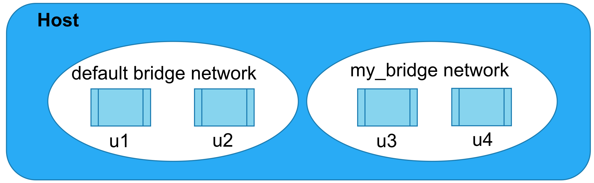
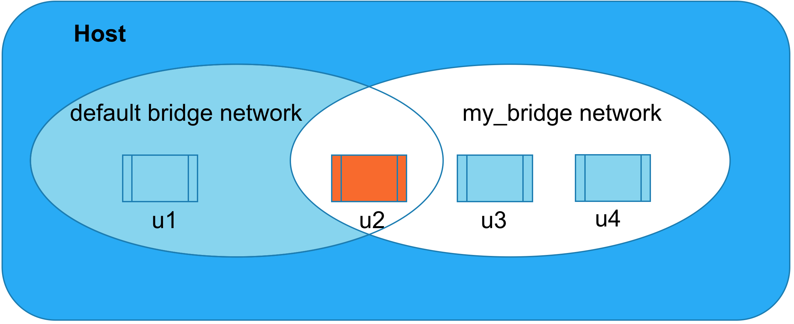

Introduction to Docker Networking
The Container Network Model

Linux Bridges
- Essentially a virtualized network switch
- Provides level 2 packet routing (ie routing between MAC addresses)
- Docker creates a linux bridge called
docker0
automatically, assigns it a random IP and subnet, and plugs all new containers into it by default.
- Containers do not have a public IP assigned to them by default, and the linux bridge's network stack firewalls them from all external traffic.
The Bridge Network

Network Firewalls

Network Firewalls

docker network connect my_bridge u2
Security Warning
Do not use the
host
network in production.
Exposing Container Ports
- Containers have no public IP address by default, and are reachable only locally via their host's linux bridge.
- If we want a service to be reachable by the outside world, we must map a container port to a host port.
- Ports can be mapped manually or automatically.
- Port mappings visible via
docker ps
or docker port
Docker Networking Takeaways
 Task: Basic Container Networking
Task: Basic Container Networking